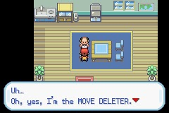
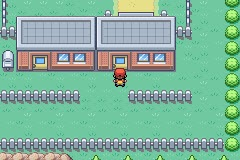
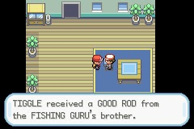
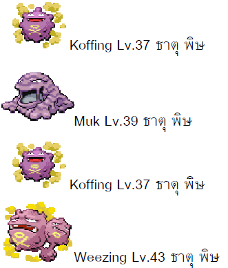
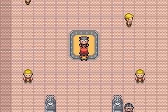
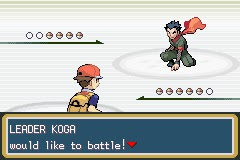

บทที่ 16 / 29
เซคิชิคุซิตี้<Fushsia City>
❖
เมื่อมาถึงเมือง ให้แวะบ้านด้านซ้ายของโปเกมอนเซนเตอร์ คนข้างในคือ Move Deleter เขาสามารถลบท่า HM หรือท่าอะไรก็ได้

จากนั้น เข้าบ้านด้านขวาสุดของเมือง นักตกปลาข้างในจะให้ Good Rod ซึ่งเป็นเบ็ดตกปลาที่ดีกว่า Old Rod


ต่อไป ไปสู้กับยิมลีดเดอร์ ในยิมนี้มีลักษณะเป็นเขาวงกตล่องหน ให้เดินไปทางขวาบนแล้วอ้อมไปทางด้านหลัง แล้วลงมาจนถึงหัวหน้ายิม หัวหน้ายิมนี้ชื่อเคียว<Koga> จะใช้โปเกมอนประเภทพิษ(ส่วนเทรนเนอร์ส่วนมากเป็นพลังจิต) ให้เราใช้โปเกมอน ดินและพลังจิตมาสู้ซะ

เมื่อชนะ เราจะได้ Soulbadge ซึ่งเพิ่มพลังป้องกันโปเกมอนทุกตัวของเราและทำให้ใช้ท่า Surf ได้ พร้อมตังค์ 4300เยน กับ TM06 Toxic


(พอสู้เสร็จ ให้เราตรงขึ้นไปด้านบนสุด เข้าซาฟารีโซน)